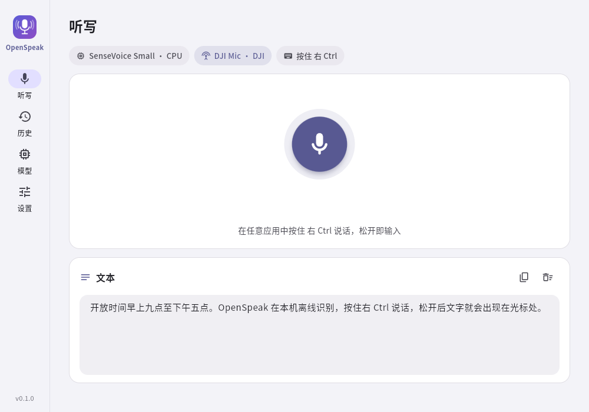

完全离线
基于 sherpa-onnx 在本机识别，音频从不离开你的电脑或手机。
开源、完全离线的语音输入工具。在任何应用里按住快捷键说话，文字直接出现在光标处。支持 Windows、Linux 与 Android。

基于 sherpa-onnx 在本机识别，音频从不离开你的电脑或手机。
SenseVoice 在普通 CPU 上 5 秒语音约 0.1 秒出字；NVIDIA 显卡可一键开启 CUDA 加速大模型。
按住右 Ctrl 说话（可自定义），松开后逐字键入当前窗口；也支持“按一下开始/结束”。
中文、英文、日语、韩语、粤语自动识别，自带标点与数字规整，可选繁转简。
在任意 App 上方点按或长按悬浮球说话，结果自动复制或直接写入输入框。
深浅色模式、8 种主题色、中英文界面，常驻托盘，占用小。
插入接收器即自动识别并切换；双发射器可按左/右声道（TX1 / TX2）分别拾音，内置自动增益让领夹麦也清晰可辨。
| 模型 | 大小 | 特点 |
|---|---|---|
| SenseVoice Small | 228 MB | 默认；中英日韩粤，带标点，CPU 即可 |
| Paraformer 中文 Small | 79 MB | 超轻量，适合低配手机 |
| FireRed-ASR2 CTC | 496 MB | 中英文高精度，建议 GPU |
| Qwen3-ASR 0.6B | 837 MB | 语音大模型，多语种，建议 GPU |